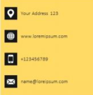
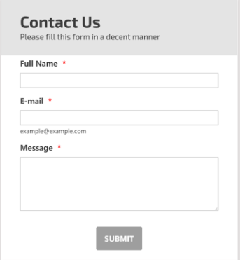
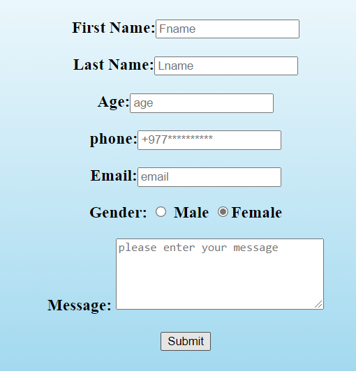

Navigation Bar
The right page is the screenshot of the website which took reference from and the left side is mine. I have implemented the navigation bar concept from that website and implemented to my website.
Button
The right page is the screenshot of the website which took reference from and the left side is mine. I have implemented the readmore button concept from that website and implemented to my website.
Icons

The right page is the screenshot of the website which took reference from and the left side is mine. I have implemented the icon concept from that website and implemented to my website.
Form


The right page is the screenshot of the website which took reference from and the left side is mine. I have implemented the form concept from that website and implemented to my website.
Footer
The right page is the screenshot of the website which took reference from and the left side is mine. I have implemented the footer concept from that website and implemented to my website.